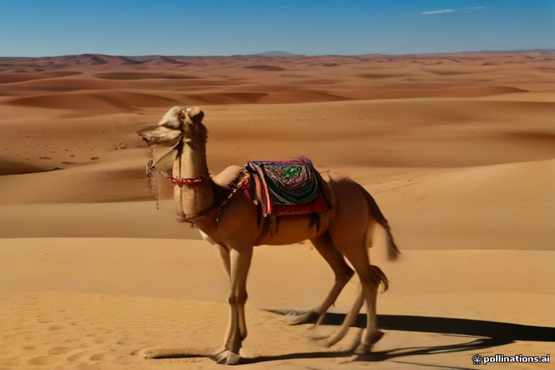

Outside Marrakesh and Fes, Morocco is still a cash economy. Card readers are rare along the N9 and N10 through the High Atlas, the Dades Valley, and the Ziz Valley, and they are virtually nonexistent in Merzouga or at your desert camp. Planning to pay for lunches, quad rentals, or tips by card will create friction.
Here is where ATMs actually work, how much cash to carry, and what fair tips look like for the people who make the trip run.
ATM availability along the route
Marrakesh and Fes have dozens of bank branches — BMCE, Attijariwafa, Banque Populaire — with standard international withdrawals. Reliability drops once you cross the High Atlas. Machines in Tinghir, Erfoud, or Rissani often run out of notes on weekends and holidays, and Merzouga village sometimes has a single machine that is prone to outages.
Treat Merzouga and Erg Chebbi as a zero-ATM zone. Withdraw your total estimated budget before leaving Marrakesh or Fes, or at the latest in Ouarzazate.
- Marrakesh and Fes: high availability, limits of 2,000 to 4,000 MAD per transaction.
- Ouarzazate and Errachidia: reliable mid-route stops.
- Tinghir, Erfoud, Rissani: backup only, not at night or on Sundays.
- Merzouga: assume there is no working ATM.
Daily cash needs and the small-note strategy
Even on a tour that covers hotels, dinner, and breakfast, you need cash for roadside lunches (80 to 150 MAD), bottled water, site entrances such as Taourirt Kasbah, and tips. A reliable baseline is 300 to 500 MAD per person per day.
Moroccan ATMs dispense almost exclusively 200 MAD notes, which are awkward for a 15 MAD bottle of water. Break them early at gas stations, hotel desks, or supermarkets in Marrakesh and Ouarzazate so you always hold a supply of 20, 50, and 100 MAD notes.
Tips are only one line of your on-trip spending. For the lunches, water, site fees, and upgrades that quotes usually leave out, see our breakdown of hidden costs on a Sahara desert tour.
Tipping your driver
Your driver is with you for three or four days, managing mountain passes, luggage, and your safety. Tips are technically optional but form a real part of their income. For a private tour, 100 to 200 MAD per day from the whole group is a fair range. On a shared tour, each traveler usually contributes 30 to 50 MAD per day.
Hand the tip to the driver at the end of the trip, in an envelope or folded notes, rather than dribbling it out day by day.
- Private driver: 100 to 200 MAD per day total.
- Shared tour driver: 30 to 50 MAD per person per day.
Tipping local guides and camel handlers
Short walking tours at Ait Ben Haddou, Taourirt, or the Todra Gorge usually warrant 50 to 100 MAD for the group. For the camel handler who leads you into the Erg Chebbi dunes, 50 to 100 MAD per person is fair for the effort and time.
If you decline a guide at the start, say so clearly and walk on. Ambiguous nods are often read as acceptance.
Tipping desert camp staff
Camps run on a small local team that cooks, cleans, hauls water, maintains the tents, and plays music after dinner. These workers are easy to overlook because you deal mostly with the driver and camel handler.
Leave a collective tip in the camp's box on your departure morning, or hand it to the manager to split among kitchen, maintenance, and music staff. Plan 50 to 100 MAD per tent or room per night, or 30 to 50 MAD per person per day.
Foreign currency, cards, and surcharges
The dirham is a restricted currency, so you cannot buy it cheaply before you arrive. Exchange at airport ATMs or official bureaus; urban bank ATMs usually give better rates than airport counters. Always tip in dirhams — staff lose money converting small euro coins or foreign notes.
Some luxury camps and quad operators accept cards on site, but they routinely add a 3 to 5 percent processing fee, and card terminals fail when the signal drops. Cash avoids both the fee and the failed transaction. Tell your home bank your travel dates and carry a second card in a separate bag; if an ATM retains your card, local branches may not reopen until Monday.
| Recipient or service | Suggested tip (MAD) | Practical notes |
|---|---|---|
| Private tour driver | 100 - 200 per day, total | Given at the end of the trip; covers the whole group |
| Desert camp staff | 50 - 100 per tent / night | Communal box for kitchen, porters, and musicians |
| Camel handler | 50 - 100 per person | Handed over after the trek into camp |
| Local kasbah guide | 50 - 100 per group | For a 45 to 60 minute walking tour |
| Lunch waitstaff | 10 - 20 per table | Leave coins after a roadside meal |

Illustration, not a photograph — for the real thing, you'll have to stand on the ridge yourself.
Quick answers
A few follow-up questions travelers ask about this.
Should I tip in euros or Moroccan dirhams?
Dirhams are always preferred. Staff lose money exchanging small foreign notes and cannot exchange coins at all. If you must use foreign currency, stick to small paper notes.
Is tipping mandatory in Morocco?
No. Tipping is customary in tourism, not legally required. Tip when the service was good, and tip less or not at all when it was not.
How do I tip the camp staff anonymously?
Most established camps have a wooden tip box at the dining tent or reception. Drop your contribution there before leaving so the manager can split it among the team.
What happens if an ATM retains my card on the route?
Bank branches in southern towns close in the evening and on weekends, so retrieval can take days. Carry a backup card in a separate bag and keep enough cash for the rest of the trip.
Are prices negotiable along the route?
Food, water, and official monument tickets are fixed. Souvenirs, carpets, and quad rentals in Merzouga usually involve polite negotiation, but keep offers reasonable.
Planning your own route?
Tell us your dates and what matters to you — we'll answer with a straight recommendation, not a brochure.
Send an inquiry See the itineraries